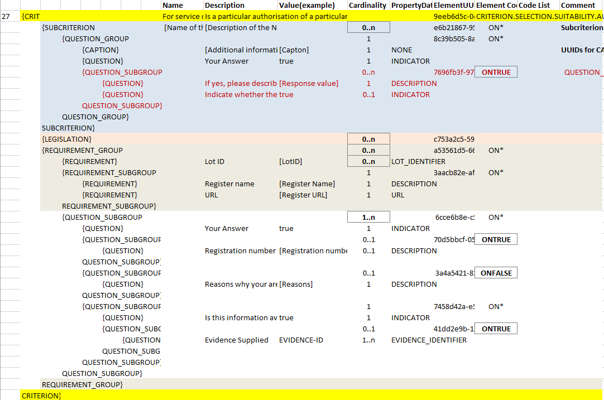

VI.2.4 Extended suitability (service contracts)
Data Structure (service contracts) - Extended
(The figure below is defined in the the tab "Suitability-II of the ESPD-CriteriaTaxonomy spread-sheet).

Figure 1. Extended 'Suitability' criterion data structure (service contracts)
XML Example (service contracts) - Extended
Example of Extended suitability criterion
<!... header elements removed for brevity -->
<cac:TenderingCriterion>
<cbc:ID schemeID="CriteriaTaxonomy" schemeAgencyID="EU-COM-GROW" schemeVersionID="2.1.1">9eeb6d5c-0eb8-48e8-a4c5-5087a7c095a4</cbc:ID>
<cbc:CriterionTypeCode listID="CriteriaTypeCode" listAgencyID="EU-COM-GROW" listVersionID="2.1.1">CRITERION.SELECTION.SUITABILITY.AUTHORISATION</cbc:CriterionTypeCode>
<cbc:Name>For service contracts: authorisation of particular organisation needed</cbc:Name>
<cbc:Description>Is a particular membership of a particular organisation needed in order to be able to perform the service in question in the country of establishment of the economic operator?</cbc:Description>
<cac:Legislation> <!-- data elements removed for brevity -->
</cac:Legislation>
<!-- Main group containing everything REQUIREMENTs and QUESTIONs -->
<cac:TenderingCriterionPropertyGroup>
<cbc:ID schemeAgencyID="EU-COM-GROW" schemeVersionID="2.1.1">a53561d5-6614-4dbe-987e-b96f35387f46</cbc:ID>
<cbc:PropertyGroupTypeCode listID="PropertyGroupType" listAgencyID="EU-COM-GROW" listVersionID="2.1.1">ON*</cbc:PropertyGroupTypeCode>
<!-- CAPTION announcing that a list of Lot IDs is coming. Addressed to software applications for GUI documentation purposes. -->
<cac:TenderingCriterionProperty>(1)
<cbc:ID schemeID="CriteriaTaxonomy" schemeAgencyID="EU-COM-GROW" schemeVersionID="2.1.1">d37f2545-fc73-49f6-a77c-80f099dbf6db</cbc:ID>
<cbc:Description>Lots the requirement apply to</cbc:Description>
<cbc:TypeCode listID="CriterionElementType" listAgencyID="EU-COM-GROW" listVersionID="2.1.1">CAPTION</cbc:TypeCode>
<cbc:ValueDataTypeCode listID="ResponseDataType" listAgencyID="EU-COM-GROW" listVersionID="2.1.1">NONE</cbc:ValueDataTypeCode>(2)
</cac:TenderingCriterionProperty>
<!-- The list of Lot IDs starts here. -->
<cac:TenderingCriterionProperty>(3)
<cbc:ID schemeID="CriteriaTaxonomy" schemeAgencyID="EU-COM-GROW" schemeVersionID="2.1.1">cfbc1c7f-9bc7-4af0-9d95-ba9f761e9ebd</cbc:ID>
<cbc:Description>LotID</cbc:Description>
<cbc:TypeCode listID="CriterionElementType" listAgencyID="EU-COM-GROW" listVersionID="2.1.1">REQUIREMENT</cbc:TypeCode>
<cbc:ValueDataTypeCode listID="ResponseDataType" listAgencyID="EU-COM-GROW" listVersionID="2.1.1">LOT_IDENTIFIER</cbc:ValueDataTypeCode>
<cbc:ExpectedID schemeAgencyID="EU-COM-GROW">Lot1</cbc:ExpectedID>
</cac:TenderingCriterionProperty>
<cac:TenderingCriterionProperty>(3)
<cbc:ID schemeID="CriteriaTaxonomy" schemeAgencyID="EU-COM-GROW" schemeVersionID="2.1.1">cfbc1c7f-9bc7-4af0-9d95-ba9f761e9ebd</cbc:ID>
<cbc:Description>LotID</cbc:Description>
<cbc:TypeCode listID="CriterionElementType" listAgencyID="EU-COM-GROW" listVersionID="2.1.1">REQUIREMENT</cbc:TypeCode>
<cbc:ValueDataTypeCode listID="ResponseDataType" listAgencyID="EU-COM-GROW" listVersionID="2.1.1">LOT_IDENTIFIER</cbc:ValueDataTypeCode>
<cbc:ExpectedID schemeAgencyID="EU-COM-GROW">Lot2</cbc:ExpectedID>
</cac:TenderingCriterionProperty>
<cac:TenderingCriterionProperty>(3)
<cbc:ID schemeID="CriteriaTaxonomy" schemeAgencyID="EU-COM-GROW" schemeVersionID="2.1.1">cfbc1c7f-9bc7-4af0-9d95-ba9f761e9ebd</cbc:ID>
<cbc:Description>LotID</cbc:Description>
<cbc:TypeCode listID="CriterionElementType" listAgencyID="EU-COM-GROW" listVersionID="2.1.1">REQUIREMENT</cbc:TypeCode>
<cbc:ValueDataTypeCode listID="ResponseDataType" listAgencyID="EU-COM-GROW" listVersionID="2.1.1">LOT_IDENTIFIER</cbc:ValueDataTypeCode>
<cbc:ExpectedID schemeAgencyID="EU-COM-GROW">Lot4</cbc:ExpectedID>
</cac:TenderingCriterionProperty>
<cac:TenderingCriterionProperty>(3)
<cbc:ID schemeID="CriteriaTaxonomy" schemeAgencyID="EU-COM-GROW" schemeVersionID="2.1.1">85835a9f-0a1a-495a-bd78-2e5af121bdbb</cbc:ID>
<cbc:Description>LotID</cbc:Description>
<cbc:TypeCode listID="CriterionElementType" listAgencyID="EU-COM-GROW" listVersionID="2.1.1">REQUIREMENT</cbc:TypeCode>
<cbc:ValueDataTypeCode listID="ResponseDataType" listAgencyID="EU-COM-GROW" listVersionID="2.1.1">LOT_IDENTIFIER</cbc:ValueDataTypeCode>
<cbc:ExpectedID schemeAgencyID="EU-COM-GROW">Lot5</cbc:ExpectedID>
</cac:TenderingCriterionProperty>
<!-- The list of Lot IDs ends here. -->
<!-- The REQUIREMENTs by the CA related to this criterion start here. In this case, the REQUIREMENT is that the EO has to provide authorisations
that are issued by the specific organisation cited by the CA in this REQUIREMENT.-->
<cac:SubsidiaryTenderingCriterionPropertyGroup>(4)
<cbc:ID schemeAgencyID="EU-COM-GROW" schemeVersionID="2.1.1">3aacb82e-afba-440c-b64e-1834007965a2</cbc:ID>
<cbc:PropertyGroupTypeCode listID="PropertyGroupType" listAgencyID="EU-COM-GROW" listVersionID="2.1.1">ON*</cbc:PropertyGroupTypeCode>
<!-- The name of the organisation issuing the authorisation: the Spanish food safety agency. -->
<cac:TenderingCriterionProperty>(5)
<cbc:ID schemeID="CriteriaTaxonomy" schemeAgencyID="EU-COM-GROW" schemeVersionID="2.1.1">6d80364e-4084-429f-94e0-bd2cbeac489a</cbc:ID>
<cbc:Description>Register name</cbc:Description>
<cbc:TypeCode listID="CriterionElementType" listAgencyID="EU-COM-GROW" listVersionID="2.1.1">REQUIREMENT</cbc:TypeCode>
<cbc:ValueDataTypeCode listID="ResponseDataType" listAgencyID="EU-COM-GROW" listVersionID="2.1.1">DESCRIPTION</cbc:ValueDataTypeCode>
<cbc:ExpectedDescription languageID="es">Agencia española para el control alimentario</cbc:ExpectedDescription>(6)
</cac:TenderingCriterionProperty>
<cac:TenderingCriterionProperty>
<cbc:ID schemeID="CriteriaTaxonomy" schemeAgencyID="EU-COM-GROW" schemeVersionID="2.1.1">e0fb6013-1711-46f0-8597-7ee3a2fdccb1</cbc:ID>
<cbc:Description>URL</cbc:Description>
<cbc:TypeCode listID="CriterionElementType" listAgencyID="EU-COM-GROW" listVersionID="2.1.1">REQUIREMENT</cbc:TypeCode>
<cbc:ValueDataTypeCode listID="ResponseDataType" listAgencyID="EU-COM-GROW" listVersionID="2.1.1">URL</cbc:ValueDataTypeCode>
<cbc:ExpectedID schemeID="URI" schemeAgencyID="EU-COM-GROW">http://datos.gob/aeca.es/autorizaciones</cbc:ExpectedID>
</cac:TenderingCriterionProperty>
</cac:SubsidiaryTenderingCriterionPropertyGroup>
<!-- The QUESTIONs associated to the REQUIREMENT and Lots above start here. -->
<cac:SubsidiaryTenderingCriterionPropertyGroup>(7)
<cbc:ID schemeAgencyID="EU-COM-GROW" schemeVersionID="2.1.1">6cce6b8e-c53d-4598-8150-ac49aba3b9c7</cbc:ID>
<cbc:PropertyGroupTypeCode listID="PropertyGroupType" listAgencyID="EU-COM-GROW" listVersionID="2.1.1">ON*</cbc:PropertyGroupTypeCode>
<!-- A "choice" structure is coming now: A true/false QUESTION is asked ("Your answer" to the question contained in the Criterion
"Is a particular membership of a particular organisation needed in order to be able to perform the service ...". If the user (the EO)
answers "Yes" (true) then it has to provide the registration number of the authorisation. Otherwise the EO will have to provide a
justification about why the authorisation is not registered. -->
<cac:TenderingCriterionProperty>(8)
<cbc:ID schemeID="CriteriaTaxonomy" schemeAgencyID="EU-COM-GROW" schemeVersionID="2.1.1">9c4ad642-d057-4fee-a73a-3623f9689677</cbc:ID>
<cbc:Description>Your Answer</cbc:Description>
<cbc:TypeCode listID="CriterionElementType" listAgencyID="EU-COM-GROW" listVersionID="2.1.1">QUESTION</cbc:TypeCode>
<cbc:ValueDataTypeCode listID="ResponseDataType" listAgencyID="EU-COM-GROW" listVersionID="2.1.1">INDICATOR</cbc:ValueDataTypeCode>
</cac:TenderingCriterionProperty>
<!-- If yes... provide the registration number for the authorisation. -->
<cac:SubsidiaryTenderingCriterionPropertyGroup>
<cbc:ID schemeAgencyID="EU-COM-GROW" schemeVersionID="2.1.1">70d5bbcf-0581-4d0f-b5c7-8b604a791972</cbc:ID>
<cbc:PropertyGroupTypeCode listID="PropertyGroupType" listAgencyID="EU-COM-GROW" listVersionID="2.1.1">ONTRUE</cbc:PropertyGroupTypeCode>
<cac:TenderingCriterionProperty>(9)
<cbc:ID schemeID="CriteriaTaxonomy" schemeAgencyID="EU-COM-GROW" schemeVersionID="2.1.1">a371db35-35ea-4f1f-9499-1426cf69d7d3</cbc:ID>
<cbc:Description>Registration number</cbc:Description>
<cbc:TypeCode listID="CriterionElementType" listAgencyID="EU-COM-GROW" listVersionID="2.1.1">QUESTION</cbc:TypeCode>
<cbc:ValueDataTypeCode listID="ResponseDataType" listAgencyID="EU-COM-GROW" listVersionID="2.1.1">DESCRIPTION</cbc:ValueDataTypeCode>
</cac:TenderingCriterionProperty>
</cac:SubsidiaryTenderingCriterionPropertyGroup>
<!-- If no... provide a justification for not having this authorisation issued by the required organisation.-->
<cac:SubsidiaryTenderingCriterionPropertyGroup>
<cbc:ID schemeAgencyID="EU-COM-GROW" schemeVersionID="2.1.1">3a4a5421-81cc-468e-b69f-b86bf8c7932d</cbc:ID>
<cbc:PropertyGroupTypeCode listID="PropertyGroupType" listAgencyID="EU-COM-GROW" listVersionID="2.1.1">ONFALSE</cbc:PropertyGroupTypeCode>
<cac:TenderingCriterionProperty>(10)
<cbc:ID schemeID="CriteriaTaxonomy" schemeAgencyID="EU-COM-GROW" schemeVersionID="2.1.1">62b65cc3-136a-4715-83b5-c09eb6c70619</cbc:ID>
<cbc:Description>Reasons why your are not registered</cbc:Description>
<cbc:TypeCode listID="CriterionElementType" listAgencyID="EU-COM-GROW" listVersionID="2.1.1">QUESTION</cbc:TypeCode>
<cbc:ValueDataTypeCode listID="ResponseDataType" listAgencyID="EU-COM-GROW" listVersionID="2.1.1">DESCRIPTION</cbc:ValueDataTypeCode>
</cac:TenderingCriterionProperty>
</cac:SubsidiaryTenderingCriterionPropertyGroup>
<!-- Evidences, e.g. supporting the justification about why the authorisation is not registered in the required organisation could be provided. -->
<cac:SubsidiaryTenderingCriterionPropertyGroup><!-- data elements removed for brevity. --></cac:SubsidiaryTenderingCriterionPropertyGroup>
</cac:SubsidiaryTenderingCriterionPropertyGroup>
</cac:TenderingCriterionPropertyGroup>
</cac:TenderingCriterion>
<!... rest of elements removed for brevity -->| 1 | This is a CAPTION, software applications can use it to document the GUI. |
| 2 | As this is a CAPTION no value is expected to be provided by the Contracting Authority (thus the absence of a cbc:Expected… element) nor by the Economic Operator (thus the value NONE`for the element `cac:ValueDataTypeCode). |
| 3 | A sequence of REQUIREMENTs related to Lots start here. In this case, this element cac:TenderingCriterionProperty is the first of a list of a series of Lots for which the following REQUIREMENTS inside the parent group (group with UUUID a53561d5-….) apply. In this example, the list of Lots are Lot1, Lot2, Lot4 and Lot5. |
| 4 | The REQUIREMENTs by the CA related to this criterion start here. |
| 5 | The name of the organisation issuing the authorisation: the Spanish food safety agency. |
| 6 | Notice the use of the attribute languageID meaning, in this example, that the name is expressed in Spanish. |
| 7 | The QUESTIONs associated to the REQUIREMENT and Lots above start here. |
| 8 | A "choice" structure is coming now: A true/false QUESTION is asked ("Your answer" to the question contained in the Criterion "Is a particular membership of a particular organisation needed in order to be able to perform the service …". If the user (the EO) answers "Yes" (true) then it has to provide the registration number of the authorisation. Otherwise the EO will have to provide a justification about why the authorisation is not registered. |
| 9 | If yes… provide the registration number for the authorisation. |
| 10 | If no… provide a justification for not having this authorisation issued by the required organisation. |